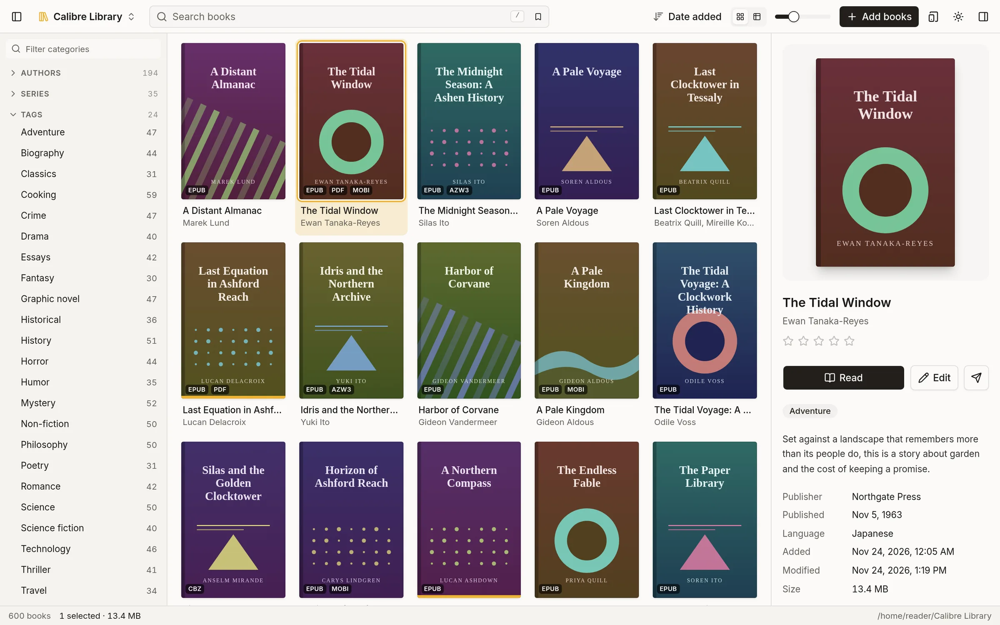
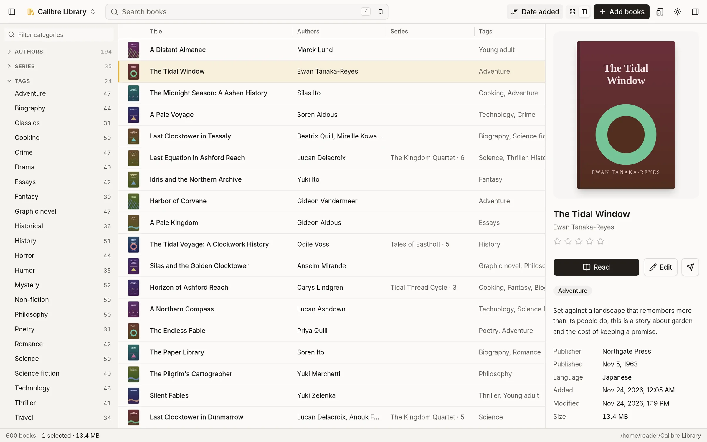
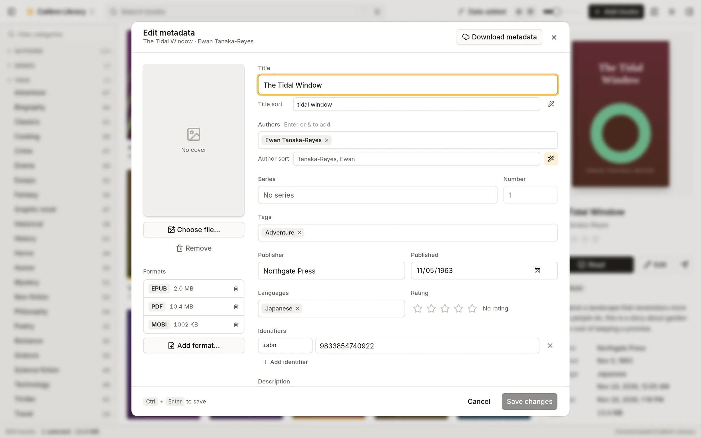
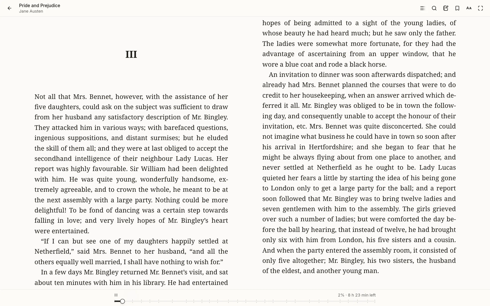
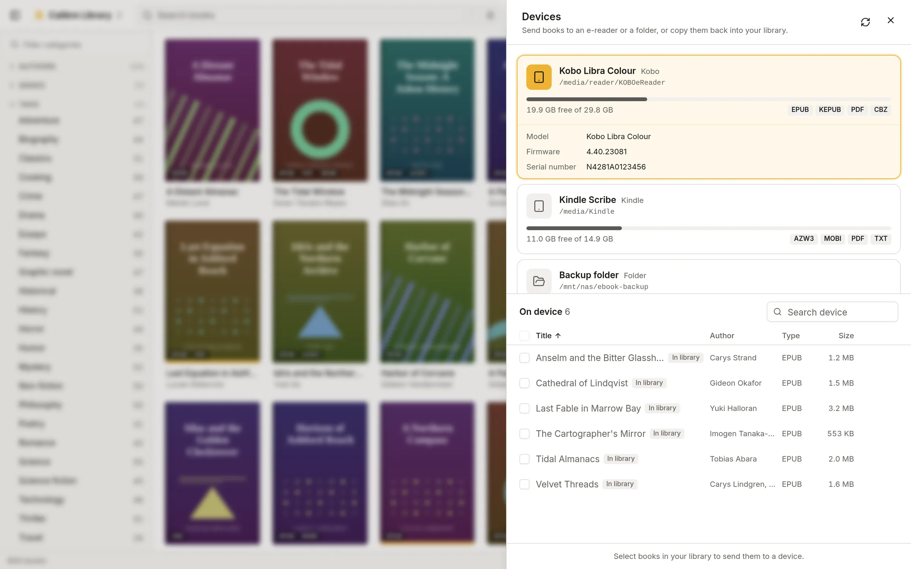

Your ebook library, without the wait
Shelfmark is a fast, modern ebook library manager. It opens your existing calibre library in place, reads your books and sends them to your e-reader.
Windows · macOS · Linux · GPL-3.0

Nothing to import. Nothing to migrate.
Shelfmark uses calibre's metadata.db and folder layout as its own library format. Point it at the folder you already have and keep using calibre next to it whenever you like.
Reading positions, highlights and notes go into a separate shelfmark.db, so your calibre data stays exactly as calibre expects it.
Browse thousands of books at a glance
A cover grid and a dense table over the same library, with a browser for authors, series, tags, publishers, languages and formats.
- calibre search syntax, such as
tags:fantasy and rating:>=4 - Saved searches and one-click filters
- Keyboard first: / search, E edit, Enter read, I details
- Drop files on the window to add them

Tidy metadata, one book or a hundred
Edit titles, authors, series, tags, identifiers, covers and descriptions, for a single book or a whole selection at once.
- Download metadata and covers from Open Library and Google Books
- Reads embedded metadata from EPUB and PDF files
- Autocomplete from what is already in your library

Open a book and just read
A calm, paginated reader that remembers where you stopped. Highlight passages, add notes, set bookmarks and search inside the book.
- EPUB, MOBI, AZW3, FB2, CBZ and PDF
- Light, sepia and dark themes, adjustable type
- Contents, search and notes in one side panel

Plug in your e-reader and send
Shelfmark finds Kobo, Kindle, PocketBook and Tolino readers over USB and shows what is on them and how much room is left.
- Send selected books in a format the device accepts
- EPUB to AZW3 conversion for Kindle
- Copy books from a device back into the library
- Any folder works as a device, handy for backups

Small, native and yours
A Rust core in a Tauri shell with a Svelte interface. No account, no cloud, no telemetry. Your library is a folder on your disk.
Reads what you own
Six formats in the built-in reader, more in the library.
Talks to your reader
Detected over USB, no drivers or plugins to set up.
Runs where you do
Installers for all three desktops, plus a portable Windows build.
Build it yourself
You need Rust, Bun and the Tauri prerequisites for your platform.
bun run dev runs the interface in a browser against a generated mock library, no Rust build required.
$ git clone https://github.com/OrellBuehler/shelfmark $ cd shelfmark $ bun install $ bun run tauri dev # run the app $ bun run tauri build # build installers